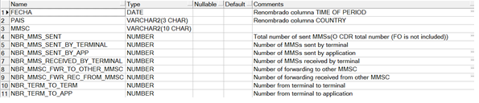

Nokia IMS (AAA)¶
1. OBJETIVO¶
El presente documento busca explicar y detallar el proceso que genera IMS (AAA)
2. ALCANCE¶
Areas involucradas: Performance de Red.
3. DEFINICIONES¶
- Cortado: Servidor UNIX en donde se importan los XML desde el proveedor, y en donde se encuentra Smart. El nombre es cortado.claro.amx y la dirección ip física es 10.105.146.8.
4. DESCRIPCION GENERAL¶
EL AAA (Authentication, Authorization and Accounting) es un equipo que pertenece al IMS(IP Multimedia Subsystem) ubicado en la red core o nucleo de LTE el cual se encarga de autenticar, autorizar y manejar la contabilidad de los usuarios de VOLTE y VOWIFI.
5. MACROFLUJO DEL PROCESO¶
6. DESCRIPCION DETALLADA¶
6.1 Datos origen¶
- Server Origen y Path: 10.105.39.140 , /d/oss/global/var/mediation/north/pm/export/
- Cantidad de archivos origen: 5 a 8 archivos
etlexpmx_TAS_20170526091624_2000185.xml

- Frecuencia actualización: Frecuencia Horaria
- Tipo de Archivo: CSV
6.2 Datos destino¶
- Server Destino: cortado.claro.amx
- Conversión de Archivos: No
- Tabla Auxiliar: Si
- Frecuencia de corrida del proceso: 1 vez por hora
- Regionales: No
- RAW Si/No: Si
- Hour Si/No: Si
- Day Si/No: Si
- BH Si/No: Si
- IBHW Si/No: Si
- Países: No
- Directorio Destino (File System): /calidad/NokiaWIFI
6.3. Shell Copiar Archivos Origen a Destino y limpieza de los mismo¶
Scripts tienen las siguientes funciones:
- Copiar los archivos
- Limpieza
- Ejecutar Pentaho
Los scripts son los siguientes: runNokiaWIFI.sh es la raíz del proceso.
Los Scrips a utilizar son:
- NokiaWIFIEndToEnd.sh
- runNokiaWIFI.sh
6.4 Listado de Tablas Utilizadas¶
Las tablas utilizadas son las siguientes:
- LTE_C_NOKIA_TAS_RAW

- LTE_C_NOKIA_TAS_HOUR
- LTE_C_NOKIA_TAS_BH

- LTE_C_NOKIA_TAS_DAY
- LTE_C_NOKIA_TAS_DAY